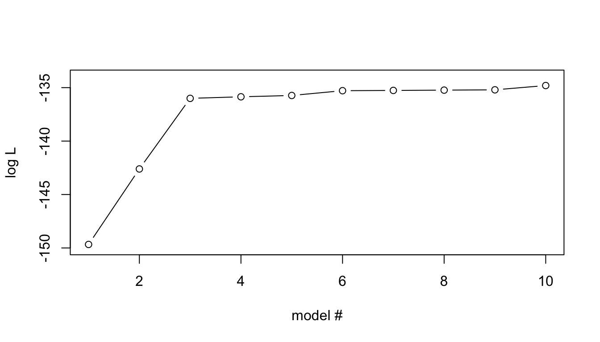

3 Overfitting
We will now look at a general problem in statistical modeling that can be visualized quite well with Likelihoods. We will later look at some solutions to this problem.
3.1 Overfitting | Example data
First, you need some test data to play around with. For simplicity and convenience, you will simulate a toy data from a linear model and use this in the exercises. The advantage for us using simulated data is that we know the ‘truth’, i.e., how the data was simulated and we therefore have oracle knowledge about the true parameter values, e.g., for \(\beta\).
3.1.1 Task | simulation of example data
- The data should comprise 100 samples.
- First generate 10 variables \((x_1,x_2,\ldots, x_{0})\) from a uniform distribution (use the function
runif) and store them in a Matrix \(X\). - Use an intercept \(\beta_0=3\)
- Generate effect sizes \(\beta_1, \beta_2, \beta_3\) from a Uniform distribution in the interval \((0.5, 1.0)\) for the 3 first \(X\) variable (use the function
runif); record the ‘true’ effect sizes for reference. - Finally generate outcome variable \(Y\) using a linear model \(Y = \beta_0 + \beta_1 x_i + \beta_2 x_2 + \beta_3 x_3 + \epsilon\), with \(\epsilon\sim N(0,\sigma^2=1)\) (i.e., the residuals are drawn from a Normal distribution with mean=0 and standard deviation=1, Tip: use the R function
rnorm).
# To obtain exactly the same result as in the demo, set seed to 85
set.seed(85)N=100 # number of samples
P=10 # number of variables
# Draw variables, x_{i,1},...,x_{i,P} for all N individuals, from a uniform distribution in interval (0,1) (this is the default interval for runif)
# 1. runif generates N*P+1 values, round them off to 2 decimals
# 2. Put values into a matrix with N rows and P columns
X=matrix(round(runif(N*(P+1),min=0, max=2),2), nrow=N, ncol=P)
# generate a y variable from a multivariate lm of 3 first X variables only
# intercept
b0=3
# effect sizes for first three variables
b=c(runif(3, min=0.5, max=1.0))
# print the true parameter values
#print(paste("True effect sizes b_1 =", b[1], "b_2 =", b[2], "b_3 =", b[3], "; intercpt =", b0))
# generate y for all samples (=rows in X) using only the 3 first variables (columns) of X
Y <- b0 + X[,1] * b[1] + X[,2] * b[2] + X[,3] * b[3] + rnorm(N)3.1.1.1 Think about:
- What can simulation be used for?
Some possible answers
Some possible answers
- Oracle knowledge when evaluating performance of methods, e.g., Type I and II errors
- Estimating probabilities and probability distributions of, e.g., data and summary statistics of data
3.2 Overfitting | Model comparison
Now consider the following two models for our data
\[\begin{eqnarray} y & \sim & \beta_0 + \beta_1 x_1 & (1) \\ y & \sim & \beta_0 + \beta_1 x_1 + \beta_2 x_2 & (2) \end{eqnarray}\]
What are the max Likelihood estimates of the two models? (we can use the R function logLik in the stats package)
3.2.1 Task | plot two likelihoods
- Create
lmmodels for the two models, and - store the likelihood (use
logLik) in a vector - plot the likelihoods
library(stats)
ll= vector()
for(i in seq(1,2)){
Xi=X[,seq(1,i)] # use variables 1..i
ll[i] <- logLik(lm(Y~Xi)) # logLik extract loglikelihood from lm
}
# plot likelihoods for models with 1 and 2 variables
plot(ll, ylab="log L", xlab="model #", type = "b", xlim=c(1,P), ylim=c(floor(min(ll)),ceiling(max(ll))))
# xlim and ylim not really necessary here, but I can reuse the plot statement below, so the plots look similarShow result

… 2 variables are clearly better than 1 variable – What if we add more variables?
3.2.2 Task | plot all likelihoods
- Now repeat this for the sequence of models obtained by creating the next model by simply adding the next \(X\) variable in order.
# compute loglikelihood (ll) for all models including variables
# 1-i, for i <= P; store results in vector ll
ll= vector()
for(i in seq(1,P)){
Xi=X[,seq(1,i)]
ll[i] <- logLik(lm(Y~Xi))
}
# plot ll for all models
plot(ll, ylab="log L", xlab="model #", type = "b", xlim=c(1,P), ylim=c(floor(min(ll)),ceiling(max(ll)))) Show result

3.2.2.1 Think about:
How does the Likelihood behave as more variables are added?
Which is the maximum likelihood model? Is this correct given our oracle knowledge?
What could be the problem with this behaviour? How would we like it to behave?
How can we obtain the desired behaviour?
Some possible answers
Some possible answers
Nested models
Model (1) can be described as a special case of Model (2) with the constraints on \(\beta_2=0\)
Therefore Model (2) will always have equal or better Maximum Likelihood than Model (1)
Overfitting
Using our oracle knowledge, we know that the simulated data was generated from the 3 first variables
- thus, the subsequent variables increase the Maximum Likelihood by modeling noise in data
This is difficult to detect by just looking at the likelihoods
Solutions
- Seek the simplest model that is “good enough” -> Regularization
Extra Reading
Model comparison | Likelihood ratio test
For nested models \(-2 \max \frac{L[\theta_1|Y,X]}{L[\theta_0|Y,X]}\) is \(\chi^2(d)\)-distributed, with \(d=\) the difference in free parameters in the two models. This fors the basis of the likelihood ratio test. This is very frequently used with in statistics, but does not perform any regularization. Applying a likelihood ratio test to our data yields the following result:
| Compared models | logL 1st model | logL 2nd model | logLR | P-value | Sign at 0.05 |
|---|---|---|---|---|---|
| 1 vs 2 variables | -149.67 | -142.61 | -7.064 | 1.71e-04 | yes |
| 2 vs 3 variables | -142.61 | -136.00 | -6.605 | 2.78e-04 | yes |
| 3 vs 4 variables | -136.00 | -135.86 | -0.1456 | 0.589 | no |
| 4 vs 5 variables | -135.86 | -135.73 | -0.1237 | 0.619 | no |
| 5 vs 6 variables | -135.73 | -135.29 | -0.4485 | 0.344 | no |
| 6 vs 7 variables | -135.29 | -135.26 | -0.02374 | 0.828 | no |
| 7 vs 8 variables | -135.26 | -135.23 | -0.02748 | 0.815 | no |
| 8 vs 9 variables | -135.23 | -135.20 | -0.02919 | 0.809 | no |
| 9 vs 10 variables | -135.20 | -134.80 | -0.4016 | 0.37 | no |
In our simple test case, the LRT also succeed in picking the correct model. It should be noted that certain issues, such as linkage disequilibrium, may cause problems for LRT (the example is not optimized to show this).